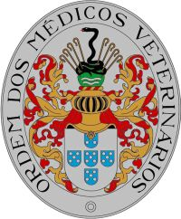

A medicina veterinária (do latim mederi, "saber o melhor caminho, curar, tratar";[1] e veterinarius, " sendo “Médico Veterinário” de origem no latim. Na antiga Roma, os animais usados no exercito que ficavam muito velhos eram recolhidos para um local onde pudessem aproveitar e descansar. As pessoas que cuidavam destes animais eram chamados de Veterinarii, que era um derivado da palavra vetus, “velho, idoso”. Por conta disso a profissão de cuidar de animais passou a ser chamada deste jeito.[2]) é uma das muitas áreas do conhecimento ligada à manutenção e restauração da saúde.[3][4][5] Ela trabalha, num sentido amplo, com a prevenção e cura das doenças das demais espécies (domésticas e silvestres) e dos humanos num contexto médico. Sendo a área de atuação do profissional de saúde animal/pública formado em uma Faculdade de Medicina Veterinária.
A medicina veterinária é a ciência médica que se dedica à prevenção, controle, erradicação e tratamento das doenças, traumatismos ou qualquer outro agravo à saúde dos animais,[3][4][5] além do controle da sanidade dos produtos e subprodutos de origem animal para o consumo humano. Busca também assegurar a qualidade, quantidade e a segurança dos estoques de alimentos de origem animal através do controle da saúde dos animais e dos processos que visam obter seus produtos. Ocupa-se da saúde animal, prevenindo, diagnosticando e curando as doenças, o que requer conhecimento detalhado de disciplinas acadêmicas (como anatomia e fisiologia) por detrás das doenças e do tratamento - a ciência da medicina - e também competência na sua prática aplicada - a arte da medicina.
Tanto o papel do médico e o significado da palavra variam significativamente ao redor do mundo, mas como compreensão geral, a ética médica requer que médicos demonstrem consideração, compaixão e benevolência perante os seus pacientes animais.
O veterinário, também chamado popularmente de doutor, é um médico especialista em medicina veterinária e em cirurgia dos animais autorizado pelo Estado para praticar a Medicina Veterinária, o veterinário exerce uma profissão protegida por um diploma, o diploma Estadual de doutor veterinário.
O veterinário é um médico multidisciplinar omnipotente, capaz de fornecer medicina clássica, cirurgias e emergências.
Ele é, ao mesmo tempo, anestesista, médico, cirurgião, radiologista, dentista, oncologista, ginecologista, cardiologista, etc.
O veterinário é capaz de tratar todos os animais, com pelos, escamas ou penas. Ele é então, por sua vez, o médico de uma vaca, uma galinha, um cachorro ou um elefante. Veterinário de uma cidade, campo ou zoológico, ele pode ter vários limites.[7]
Conceito
A medicina veterinária é a "arte da cura de animais". No entanto este ramo da medicina encontra-se em constante dinamismo, tanto em termos de investigação e avanço científico como em termos de controle e erradicação de doenças.
O conceito de medicina tradicional refere-se a práticas, abordagens e conhecimentos, --- incorporando conceitos materiais e espirituais ---, técnicas manuais e exercícios, aplicados individualmente ou combinados, a indivíduos ou a coletividades, de maneira a tratar, diagnosticar e prevenir doenças, ou visando a manter o bem-estar.
A atual prática da medicina utiliza em seu favor conhecimentos obtidos por diversas ciências, por exemplo, biologia, química, física, microbiologia, epidemiologia, anatomia, fisiologia etc. Trata-se, na verdade, de várias ligações das ciências relacionadas à saúde. Em um conceito restrito, a Medicina Veterinária busca a saúde animal pública e humana por meio de estudos, diagnósticos e tratamentos, e no conceito mais amplo, aliviar o sofrimento e manter o bem-estar global. De modo geral, a Medicina Veterinária engloba os campos de Clínica Médico-Veterinária, Cirurgia, Ginecologia e obstetrícia e Saúde pública.
Símbolo heráldico da Ordem dos Médicos Veterinários
Brasão de Armas
A Ordem adotou para símbolo um brasão de Armas, com os elementos construtivos que se discriminam:
Brasão ovalado, circundado por listel ovalado, de prata, com a seguinte inscrição em letras gregas maiúsculas, de tipo Ellzevir: ORDEM DOS MÉDICOS VETERINÁRIOS.
Dentro do listel, em campo de prata, as Armas da Ordem: Escudo de prata, com cinco escudetes de azul postos em cruz, cada um deles carregado por cinco lesantes de prata, postos em aspa; Elmo de ouro, de frente, assente sobre o escudo; Virol de ouro e vermelho, sobre o elmo; Timbre, assente sobre o virol, constituído por uma esfera de verde, ondada de duas faixas de prata, tendo cravadas oito bordões de castanho, entrelaçados nas bases por serpente, de negro, linguada de vermelho, que se ergue no campo de prata; Paquifes de ouro e vermelho.
Selo
circular, com a legenda da Ordem e dentro as suas armas, com a indicação dos esmaltes. Bandeira
Quadrada de branco, tendo ao centro o brasão de Armas da Ordem. Haste dourada, com cordões de vermelho e borlas de ouro. Leitura simbólica Identificação Nacional: O Escudo de cinco quinas
da Profissão: O elmo com virol e paquife
Caracterização Profissional: Inserção de atuação
Campo (verde - terra) Ondas (prata - despoluição) Âmbito Zootécnico: Bordões Âmbito Médico:Serpente
História
A medicina veterinária é tão antiga quanto a ligação que os seres humanos realizaram com os animais. A ars veterinaria estava registrada no Papiro de Kahoun, de cerca de 4000 a.C.. Os códigos Eshn Unna (1900 a.C.) e de Hamurabi (c. 1700 a.C.), na Babilônia, trazem referências ao pagamento e atribuições dos médicos dos animais. A fundação das primeiras escolas de medicina veterinária no Ocidente, é considerado o marco da profissão, os profissionais que se dedicam a ela receberam vários nomes ao longo da história, por exemplo, na Grécia Antiga, a profissão, então chamada de hipiátrica, data do século VI a.C.; já em Roma alguns tratados foram dedicados às doenças animais, como os de Catão, o Velho e de Columela.
De acordo com a Mitologia Grega, Esculápio teria aprendido a arte da cura com Quíron. Ele é costumeiramente representado como um cirurgião na embarcação Argo, construída com a ajuda da deusa Atena. Esculápio era tão habilidoso nas artes médicas que ganhou a reputação de ter trazido pacientes de volta dos mortos. Em virtude disto, foi punido e colocado nos céus como a constelação Ofiúco (significando: "o portador da serpente", ou "O Serpentário"). Tal constelação fica entre Sagitário e Escorpião. Caduceu de Asclépio ou Esculápio, o símbolo da medicina, visto aqui na bandeira da OMS. Em várias esculturas procedentes de templos de Asclépio greco-romanos, o deus da medicina é sempre representado segurando um bastão com uma serpente em volta, o qual se tornou o símbolo da medicina.
A fundação das primeiras escolas de medicina veterinária no Ocidente, é considerado o marco da profissão, os profissionais que se dedicam a ela receberam vários nomes ao longo da história, por exemplo, na Grécia Antiga, a profissão, então chamada de hipiátrica, data do século VI a.C.; já em Roma alguns tratados foram dedicados às doenças animais, como os de Catão, o Velho e de Columela.
Apsirtos
Apsirtos, considerado o "Pai da Medicina Veterinária" no Ocidente, nasceu em Clazômenas, em 300, foi autor de 121 dos 420 artigos do tratado publicado no século VI, no Império Bizantino, chamado Hippiatrika. Formado em Medicina, em Alexandria, foi o Médico Veterinário chefe no exército de Constantino.
Sistematização do estudo
Foi durante o reinado de Afonso V de Aragão, na Espanha, que o estudo básico teve início; no governo de Fernando e Isabel, foi disciplinado o cargo de albeitar - palavra derivada do nome de um grande médico de animais, de origem árabe (cujo nome era Eb-Ebb-Beithar), e que foi traduzido para o português como alveitar. Podemos dizer que o início do ensino formal da Medicina Veterinária se deu no período após a Guerra dos 30 anos onde houve um aperfeiçoamento da Medicina, inclusive da Veterinária, resultando na necessidade de ensinar os serviçais a tratarem dos animais feridos ou enfermos. As duas primeiras escolas de medicina veterinária, Lyon, em 4 de agosto de 1761, e a de Alfort (Paris), em 1765, foram criadas pelo francês Claude Bourgelat, advogado e amante de cavalos, que não se conformava com a ineficiência no tratamento empírico ( uso inicial de antimicrobianos baseado nos agentes mais prováveis da infecção) em seus cavalos de raça, e usou sua influência para convencer o Rei Luiz XV a criar a Escola Veterinária de Lyon, que passou a funcionar em 1762., tendo seus alunos recrutados em meio a ferradores, especialistas em cuidar de cascos de equinos, sendo então a ferradura uma das matéria estudadas. Se seguiram o surgimento, na Europa de vários outros cursos, tais como as escolas de Viena, em 1768, Turim (1769) e Gôttingen (1771). Os primeiros veterinários oficialmente reconhecidos formaram-se nas grandes escolas veterinárias fundadas entre 1762 e 1821, como o Royal Veterinary College, em 1791 em Londres, e a escola de Lyon tornou-se símbolo de modernidade.
No Brasil
Com a chegada da família real ao Brasil, em 1808, a cultura científica e literária brasileira recebeu novo alento, pois até então não havia bibliotecas, imprensa e ensino superior no Brasil Colônia. São fundadas, inicialmente, as Faculdades de Medicina (1815), Direito (1827) e a de Engenharia Politécnica (1874). Quanto ao ensino das Ciências Agrárias, seu interesse só foi despertado quando o Imperador D. Pedro II, ao viajar para França, em 1875, visitou a Escola de Medicina Veterinária de Alfort, impressionou-se com uma Conferência ministrada pelo Médico Veterinário e Fisiologista Dr. Collin. Ao regressar ao Brasil, tentou propiciar condições para a criação de entidade semelhante no País. Entretanto, somente no início do século XX, já sob regime republicano, autoridades brasileiras decretaram a criação das duas primeiras instituições de ensino de Medicina Veterinária no Brasil, a Escola de Medicina Veterinária do Exército, pelo Dec. nº 2.232, de 6 de janeiro de 1910 (aberta em 17 de julho de 1914), e a Escola Superior de Agricultura e Medicina Veterinária, através do Dec. nº 8.919 de 20 de outubro de 1910 (aberta em 4 de setembro de 1913), ambas na cidade do Rio de Janeiro. Em 1911, em Olinda, Pernambuco, a Congregação Beneditina Brasileira do Mosteiro de São Bento, através do Abade D. Pedro Roeser, sugere a criação de uma instituição destinada ao ensino das ciências agrárias, ou seja, Agronomia e Veterinária. As escolas teriam como padrão de ensino as clássicas escolas agrícolas da Alemanha, as "Landwirschaf Hochschule". No dia 1º de julho de 1914, eram inaugurados os curso de Agronomia e Medicina Veterinária nesta instituição. Todavia, por ocasião da realização da terceira sessão da Congregação, em 15 de dezembro de 1913, ou seja antes da abertura oficial do curso de Medicina Veterinária, um Farmacêutico formado pela Faculdade de Medicina e Farmácia da Bahia solicitava matrícula no curso de Medicina Veterinária, na condição de "portador de outro diploma do curso superior". A Congregação, acatando a solicitação do postulante, além de aceitar dispensa das matérias já cursadas indica um professor particular, para lhe transmitir os conhecimentos necessários para a obtenção do diploma antes dos (quatro) anos regimentares. Assim, no dia 13 de novembro de 1915, durante a 24ª sessão da congregação, recebia o grau de Médico Veterinário o senhor Dr. Dionysio Meilli, primeiro Médico Veterinário formado e diplomado no Brasil. Desde o início de suas atividades até o ano de 1925, foram diplomados 24 médicos veterinários. Em 29 de janeiro, após treze anos de funcionamento, a Escola foi fechada por ordem do Abade D. Pedro Roeser. A primeira mulher diplomada em Medicina Veterinária no Brasil foi a Dra. Nair Eugênia Lobo, na turma de 1929 pela Escola Superior de Agricultura e Veterinária, hoje Universidade Federal Rural do Rio de Janeiro.-UFRRJ. No Brasil, os primeiros trabalhos científicos abrangendo a patologia comparada (animal e humana) foram realizados pelo Capitão-Médico João Moniz Barreto de Aragão (fundador da Escola de Medicina Veterinária do Exército), em 1917, no Rio de Janeiro, e cognominado Patrono da Medicina Veterinária Militar Brasileira, cuja comemoração se dá no dia 17 de junho, data oficial de inauguração da Escola de Medicina Veterinária do Exército (17 de junho de 1914).[9] O primeiro uso registrado de terapia regenerativa com células-tronco para tratar lesões num animal selvagem, ocorreu em 2011, no Brasil.[10] Naquela ocasião, o Zoológico de Brasília empregou células-tronco para tratar uma loba-guará vítima de atropelamento, que foi depois devolvida, totalmente recuperada, para a natureza.